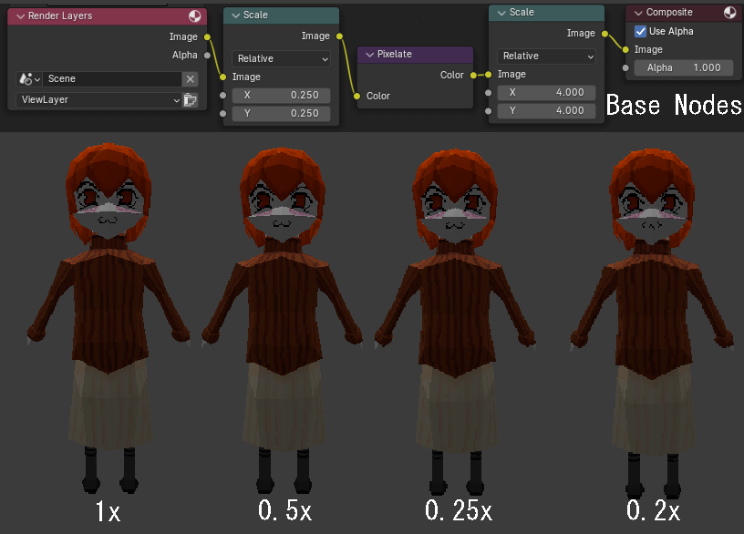

The Silly Blog
Regular Blog Updates About the website are hosted here!
PSX effects and tricks
22/12/2023 - 23/12/2023
Building this website so far I have been aiming for a sort of old net style. Decorating the website with old hardware and pixelated graphics.
This silly should reflect that, and so far that is what I have done using low poly modeling and pixelated unfiltered textures. However there is still
more I can do.
In blender it is possible to replicate old graphics using a few tricks. I'm no expert on old graphics, Nor am I old enough to even have experenced those
retro games and consoles but I think I know enough to attempt to replicate old graphics.
Disabiling anti-aliasing was one trick used. I learned how to do this from this youtube tutoral
This disables the computer from attempting to make edges smooth by bluring them. Which in old consoles, was simply not possible.
Pixelating the rendering was another trick I used which I got from this youtube tutoral. This is done
by downscaling the resolution, Pixelating it then upscailing the resolution back to normal
Vertex Snapping is another trick I used, This one is quite complicated and I can't really describe it in words. But I got it from this youtube tutoral
This one is alot more experimental and I am unsure as to if i will keep it in the final product. Its also somewhat hard to notice with the pixelating of the graphics.
Pixelated Rendering Example
 Open image in new tab!Vertex Snapping exadurated example
Texturing
20/12/2023 - 23/12/2023
Following each object that had been UV mapped I then added some texture. This was done in both Clip sutdio paint and Blenders texture editor.
Theres not much too texture, Its just taking what I have done in the 2D drawings of the silly and putting it on the model. One notable thing I that took
a while to figure out was disabling anti-aliasing to give a pixel look, This can be seen in The Silly 3D Model: Day 3.
In This youtube tutoral Garbaj said a trick he uses if bluring out the pixelated texture, This is somthing
I could experiment with in the finishing touches of the model to make the textures look nicer. I won't use it if starts ruining the style I'm going for however.
Basic Textures so far
 Open image in new tab!
Open image in new tab!
UV Mapping
15/12/2023 - 21/12/2023 (i think)
This was the first time I have had to UV map Properly. The body was simple due to the simple geometry, I was able to just use blenders Project from View feature
For most mapping, With a view configuring.
However when it came to the arms it was much more difficult, I think it achualy took me days to make that UV map because I had to learn how to Properly
make a UV map and not just project from view. I used pixel texture featured in this Youtube tutoral
and pretty much ignored the rest :p. This was pretty dumb as there are a few tools i think would have been useful in that tutoral. In another
Youtube tutoral I learned that when unwrapping a UV you need to think of it like cutting parts of a
3D object, Like a can so it can lay down flat. You can do the cutting using "Seams", From this point onwards I started using seams to sperate complex parts of my objects.
I also learnt from a friend of mine Who for privacy reasons im just gonna name miggle, How to stich textures toghether, Allowing me to stick my corrected UV "Quads" toghether.
For the arms and the hair this took a rediculous ammount of time and im sure there is a much more efficent way, But the manual adjusting seemed to just work.
Somewhere down the line I learned how to snap the UV Verts to a pixel perfect grid, I don't remember where I learned this but it was very helpful.
This Youtube tutoral again pretty much coveres how to do it tho.
Example of me correcting a UV!
 Open image in new tab!
Open image in new tab!
Final UV maps for hair and arms
 Open image in new tab!
Open image in new tab!
The Silly 3D Model: Day ??
23/12/2023 - 10:40am
Whoops!
Yeah somewhere down the line i stopped recording my updates, that just happens sometimes where my motivation locks up, Maby I over worked myself.
I still worked on the model while I was gone however so I will try to document in the next coming blog posts about everything I have done.
Gallary!
15/12/2023 - 4:30pm
There is now a Gallary!
Well there already was one but now it has images, This will host many images of the silly and maby some other stuff as I develop this website.
Currently it is small but it will grow with time as I find sillys to put in there.
Internally the file strucuture for images has been redone, So images are now organized. This is not important for you viewers but its a change to the website
None the less.

Open image in new tab!
The Silly 3D Model: Day 3
15/12/2023 - 3pm
Following some fixes with the model and ajusting the UV map to the model I can now start painting textures,
I have gone for a 500x500 canvas size to give the silly's Texture a pixelated style.
This was problematic to begin with because the texture would keep blurring whenever I applyed it.
However following setting the rendering tab (A tab i didn't even know existed) to some settings
I copyed from This Youtube Video It appears to display
the texture correctly. Now its time to just paint the texture. Blenders Texture Paint Tab kinda sucks and keeps
drawing my face textures off center. It also lacks the proper brushes so I have decided to do the texturing
in clipstudio paint, which has all the brushes I need :D
Its hair still needs to be fixed a little but I can work on that when i start doing the hair texture! Probably
A bad workflow but I'm doing this for fun I dont care
Showcase of both software, Look how silly it is!

Open image in new tab!
The UV layout so far!
Open image in new tab!
The Silly 3D Model: Day 2
15/12/2023
Day two, I have merged all shapes into one body, and I have also started work on a UV map!.
Model so far, The silly got a haircut!

Open image in new tab!
The UV Map so far!

Open image in new tab!
The Silly 3D Model: Day 1
14/12/2023
Currently I am learning to create this 3D model for the website!. This will be a 3D mascot for the website! I don't achualy know how to 3D model so it has taken me hours to make minimal progress. But I think im starting to get over the learning curve!
These drawings purposly look kinda bad to make it easier to 3D model the creature.
The Design Sheet

Open image in new tab!
Screenshot of current progress!

Open image in new tab!
Some music!
13/12/2023
This is Yakui's music not mine, I just like it. This blog post is really just to test the layout, Not much to look at :3